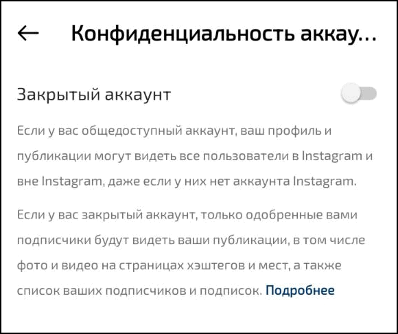
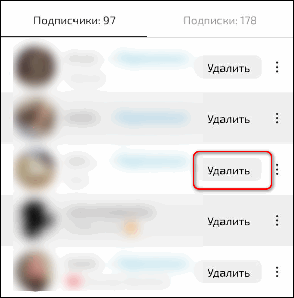
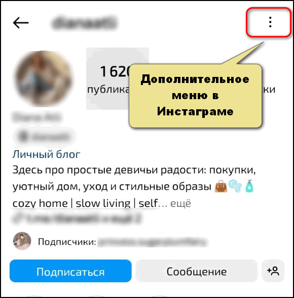
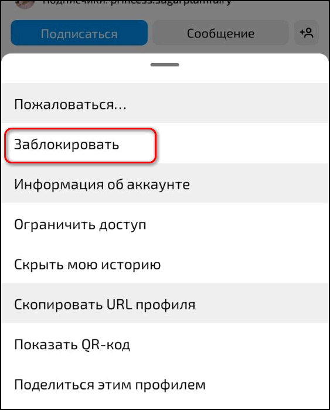

Как скрыть подписки и подписчиков в Инстаграм от других пользователей

Есть немного вариантов, как в Инстаграме* скрыть подписки и подписчиков. Конкретной и отдельной функции для этого не предусмотрено, особенно для владельцев бизнес-профилей и страниц авторов.
Подписки и подписчики – приватность раздела
В Инстаграме* скрыть подписчиков от других пользователей получится, если переключиться на закрытый тип аккаунта. В этом статусе страница будет недоступна для посетителей: запрещен просмотр публикаций, Историй, списков подписчиков и подписок. Но владельцы бизнес-аккаунтов не смогут перейти на приватный тип профиля без отказа от статистики.
Кстати, посмотреть чужой закрытый аккаунт все таки можно, тут описала несколько инструкций и способов.
Владелец страницы может ограничить просмотр перечня для определенных посетителей, но не для всех. Поэтому, владельцам бизнеса и блогерам нужно выбирать между приватностью и возможностью официально продвигать услуги в социальной сети.
Как скрыть от других: 3 способа
Есть три рабочих способа, как скрыть одного пользователя или нескольких в подписках:
- закрыть страницу. Посмотреть подписки и подписчиков возможно после одобрения владельцем заявки в друзья;
- заблокировать определенного гостя. Для тех, кто не хочет демонстрировать подписки конкурентам или недоброжелателям;
- удалить ненужных подписчиков и очистить подписки.
Есть небольшая хитрость, как удалить всех из перечня подписчиков или подписок, но иметь постоянный доступ к интересным страницам. И в этом поможет раздел: «Сохраненное». Из каждого профиля, который будет в дальнейшем удален, нужно сохранить в коллекцию по одной или нескольким публикациям. После, пользователь отыщет доступ к интересным аккаунтам через сохраненные записи.
№1 Сделать учетную запись приватной
Простой способ, как закрыть подписки в Инстаграме* от всех пользователей – сделать аккаунт приватным. Это значит, что посетители увидят на странице сообщение: «Этот профиль приватный. Отправьте запрос, чтобы стать подписчиком». И записи доступны только фанатам, которые были ранее одобрены владельцем профиля. Для обладателей личной учетной записи не будет проблем с переходом:
- Зайти в социальную сеть – нажать сбоку по трем горизонтальным полосам: «Настройки».

- Конфиденциальность – переключить на «Закрытый».

После регистрации у каждой страницы статус «Доступен всем». То есть записи видит любой посетитель, как и может поставить лайк, отправить комментарий или подписаться. Владельцем бизнес-профилей изначально в разделе «Настроек» нужно выбрать: «Профессиональные инструменты» и пункт: «Переключить тип». Там появится вариант: «Перейти на личный». Владелец профиля будет предупрежден, что при возвращении на личный исчезнет статистика, будут отключены бизнес-инструменты. Поэтому, прежде чем закрывать свою страницу, желательно выгрузить статистику. Потому что при восстановлении она будет аннулирована и расчет начнется заново, с того дня, как бизнес-профиль снова включат.
№2 Удалить ненужные подписки
Еще один вариант, как спрятать подписчиков в Инстаграме* - удалить их и сохранить ссылки любым другим способом. Даже старая переписка в Директе подойдет, чтобы иметь быстрый доступ к чужой странице. Но при этом, окружающие смогут посмотреть оставшихся подписчиков. Как работает:
- Зайти в Инстаграм* - перейти в перечень: «Подписчики».

- Напротив имени нажать: «Удалить».
То же касается и с удалением подписок: напротив никнейма нажать «Отписаться».
№3 Заблокировать других пользователей
Если нужно скрыть друзей в Инстаграме* от определенных посетителей – можно последних заблокировать. Тогда, со своих личных страниц, те не смогут посмотреть подробную информацию, включая подписки. Остальные же гости аккаунта смогут просматривать публикации, Истории. Инстаграм* предлагает несколько вариантов блокировки, среди которых нужно выбрать полную. Если ограничить доступ, то публикации и перечень подписчиков будет виден при переходе в профиль. Как полностью заблокировать другого человека:
- Перейти в аккаунт пользователя которого нужно заблокировать.

- Нажать сверху по трем точкам: «Блокировать».
- Запретить доступ.

Но при блокировке также не будут доступны записи этого человека. Чтобы восстановить просмотр, нужно перейти в раздел «Заблокированные аккаунты», который расположен в настройках своего профиля.
Почему не получается скрыть раздел в Инстаграме*
В Инстаграме* включить функцию скрытых подписок не получится, потому что её попросту нет. И правилами социальной сети не предусмотрено скрывать подобную информацию отдельно. Поэтому существует всего один рабочий способ, как убрать от окружающих подписчиков и подписки – через закрытый профиль. Также Инстаграм* постепенно открывает новые разделы, позволяющие больше узнать о своих друзьях. Например, «Общие действия», которая покажет публикации, отмеченные лайками со взаимными подписками. Пользователям, которые беспокоятся о конфиденциальности данных, стоит переключиться на «закрытый тип», чтобы посторонние не смогли посмотреть их действия.